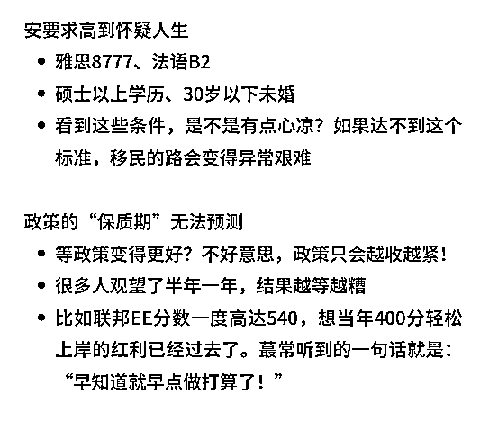

来源：https://doaumdpwbp.feishu.cn/docx/Br3EdgzHzoLzWxxezZQcJfCznfd
大家好，我是安琪，在讲我的故事前，心里满是感激。真的特别感谢生财有术的创始人亦仁，搭建了这么棒的平台，让我这样啥都不懂的自媒体菜鸟，有机会学到好多干货，还能分享自己的故事。同时，也多亏有人推荐，让我认识了生财有术的珍妮子，她简直是我的 “大神”。在这到处都是网红的自媒体时代，珍妮子为我这个小白推开了一扇窗，让我踏入一片充满无限可能的广阔天地，让我有机会看见星辰大海！
从08年至今，我在移民行业深耕17年，经手的移民申请有上千个，也算是 “阅项目无数”，加拿大、美国、香港、新加坡、英国、澳洲、欧洲等国家的移民项目都深度参与过。这些年，见证了各国移民政策的起起伏伏。18年开始进一步深耕加拿大本土资源，为接下来的移民业务奠定了坚实的基础。
2024年是加拿大移民难如登天的一年，政策说停就停，门槛说高就高，完全不给任何人喘息思考的机会。机构束手无措，因为没有项目可做；客户紧张焦虑，因为不知道什么项目还能做。
在这样“不太平”的一年多时间里，我凭借多年与西人雇主打交道的经验，以及对稀缺资源敏锐度，成功拿到了加拿大某省份的稀有名额，基本上垄断了这个省份的优质雇主资源，同时通过线上获客，做到了客户签约率翻倍。
就在2024的加拿大移民“灾难年”，在很多中介对加拿大移民“不好做了”、“不能做了”、“要失业了”的抱怨中，我们近3个月做到了近500w+GMV，今天会和大家分享我们到底是如何做到的。
2024年最后一单，签约付款只用5天，之后又推荐了7个准客户。
前言
获客端：从线下到线上，我在做移民赛道运营时踩过的坑
交付端：从0积累到加拿大移民全境资源，我在维系雇主时踩过的坑
转化端：从0信任到5天签约付款，我在转化变现时踩过的坑
2018 年，一个看似平常却改变“命运”的决定---我带着女儿来到加拿大上学。当时决定做得太突然，落地时女儿拿着学签，我就只揣着个旅游签。干移民这行的，心里都清楚有身份的重要性！于是，便踏上一条充满未知又坎坷的移民路。
那段日子，简直就是一部 “血泪史”。我和女儿的课同时开，为了赶早课，天还没亮，就得把女儿送去学校，学校大门紧闭，周围冷冷清清。加拿大的冬天，真的寒风就像刀子一样，每次看着女儿在冰天雪地里那小小的身影，我的心就像被重锤狠狠砸了一下，现在回想还是疼得眼泪在眼眶里打转。
有一次，在上学路上，意外突然降临 —— 遭遇车祸，对方居然肇事逃逸！大冷天的早上，整个人瞬间懵了，可是我连停下来哭一场的时间都没有。
不过，老天终究还是眷顾努力的人。我成功拿到加拿大 PR，女儿也拿到了心仪大学的 offer。那一刻，之前所有的苦难都化作幸福，一切都值了！
在国内自媒体飞速发展的这几年，我一直在加拿大，2024 年之前，我做移民业务还是依赖传统的线下获客模式，其中的艰难，真的只有自己清楚。
这种传统线下获客模式，限制太多了。哪怕我手里握着再好的项目，也很难让更多人知道。慢慢地，客户资源越来越少，签约量明显下降，真是一言难尽。
后知后觉的我终于意识到线下获客模式已经不行了，必须转型。于是在2024 年11月，这个小红书很多赛道都已经卷上天的时候，我毅然决然地冲进小红书的 “战场”。在这个加拿大移民政策动荡，大家都觉得特别不好做的时期，我做到了：线上有流量，线下有资源，咨询有技巧，交付有团队，形成了完美的闭环。3个月的时间成功签约了15单客户，以往线下获客3个月最多只能签5单，自从线上获客后，单数从5单增加到15单，是传统下线获客的3倍。
一篇笔记：186个精准评论，近200个私信咨询
比如：修改前是这样的

用这个封面的原因是看到有些笔记用了张雪峰，数据很好
于是，就想当然的觉得想移民的人，应该都知道马斯克，就参考了做成封面，结果数据非常不理想。后来发现封面的设计也是很重要的，不是随便找个名人就可以用在移民赛道，马斯克和移民加拿大不能产生直接联系，那么就不会引起那些想移民加拿大的人的注意，更不会仔细看图片上的文字内容。
修改后：找到问题之后，及时做了调整，小眼睛瞬间翻了100倍
这个封面的灵感来自于上海落户笔记的封面内容
于是就有了以下对比：


修改前：封面上文字一大堆，密密麻麻，关键内容却藏得严严实实，用户根本没耐心找，直接就划走了（请见以下2个图）

修改后：清晰明了，用户可以马上找到重点，并且愿意继续看下去（再请对比以下2个图）
修改前：看了会很懵，用户看到封面完全不知道想表达什么，就是说没看到他们关心的问题，也就不想点进去一看究竟，因此无法吸引到精准客户
修改后：明确了目标客户群---“想拿加拿大PR的人”，小眼睛也因此翻了快100倍

于是就有了以下对比：

修改后的封面灵感来自于一篇英国移民笔记
修改前：加拿大移民，就是在淘汰不清醒的人
“不清醒的人” 概念模糊，让人很难有代入感，不知道怎样算不清醒，他们不能很快与内容建立情感连接。只是强调了淘汰，也没有给用户提供所需要的价值，感觉话没说完就结束了。
修改后：加拿大移民劝退，本末倒置的人别来
“本末倒置” 就可以清晰地指出一种现象，比如移民加拿大完全没有规划，不知道该选择什么项目，也不知道该怎么找好的项目，这样一来，用户就很容易就能对号入座并产生共鸣。“劝退” 暗示笔记中有解释“本末倒置” 的坏处，以及应该怎样做才是对的，让人觉得能得到有用的信息，满足了大家想移民，但都不想踩坑额心里需求，吸引点击进一步看内容。
修改前：加拿大移民后才敢说出来的大实话
“大实话” 的说法比较宽泛，带来的情感冲击也会比较弱，用户不知道所谓的 “大实话” 是关于哪些方面，是移民、还是移民后的生活，或者其他方面。与移民的联系不紧密，因此用户很难直接感受到与自身利益的关联，所以就会平静的划走。
修改后：加拿大移民名额造假，中介拒退17万刀
直接抛出两个非常有争议性和话题性的内容 ——“移民名额造假” ，这就直接关系到想移民的人的切身利益，“拒退 17 万刀” 这一具体金额，更加让用户感到严重性，因此能迅速抓住读者眼球，激发他们强烈的兴趣和一探究竟的欲望。
当时我曾经梳理了移民行业的思维导图，但是专业术语过多，新用户根本看不懂。
如下图：
坑踩过之后才明白，专业的东西可以体现我和其他中介不一样，但只能吸引同行，因为真正想移民的客户根本看不懂，也不知道什么是重点？哪些与自己有关？一篇写给同行的笔记，小眼睛肯定不会多，就算有个别评论咨询，也肯定是同行的“探子”。
内容是要接地气且通俗易懂，让大家不费力气就可以明白，并能找到自己想要的答案。试想，如果是自己想了解一个自己没接触过的事情，看到这样一堆专业术语，不懵才怪，根本无法理解，更不会有心思再看下去，即便是内容写的真的很专业。
于是做了相应的调整，如下：
这样修改后，用户就很容易明白我在说什么，并且很快就能根据自身情况对号入座，有需求的人看过后，就会有意向进一步咨询
如下图：看了这些之后除了信心被打击碾压，就只能叉掉不看了，因为实在是“太难了，放弃吧！”，可想而知，这样的内容谁还会想咨询😂
现在自己回头看这些内容真的会笑😂，估计大家看了都在想，“这是移民局的代言人吗？写的什么乱七八糟的，一个也看不懂！”
意识到问题后，做了如下调整：
这样的说法，大家会瞬间知道我在说什么，也可以很快给自己做个评估，目标受众的针对性也更清晰些
修改前：如下图，一眼看过去，只有密密麻麻的文字，大家没办法找到重点，不知道说的内容是否和自己有关，语气也很书面，看起来很累，肯定会没耐心看下去

修改后：后更加简单易懂，重点也清晰明了（注：此处我只晒了我梳理的飞书文档，没有晒真实配图）
在移民加拿大的众多项目中，雇主担保项目因为相对简单一直备受青睐。但其实，这条路上也是暗藏陷阱，其中最关键也最具挑战性的，就是找到一个符合要求的优质雇主。这个环节，水很深，坑很多，让人防不胜防。一旦稍有疏忽，就可能让整个移民申请前功尽弃。
然而，在最初的时候，我并不知道这些。满怀热忱的我，真的是碰得“头破血流”。
记得刚开始时，有一家机构的老板通过朋友介绍找到我，信誓旦旦地说他们有很多优质雇主，并且这些雇主都经过严格筛选，资质优良，成功案例众多。他们还给我看了很多雇主相关的资料，看起来非常正规。当时刚好有一个客户想申请雇主担保项目，我觉得这种合作方式既便捷又高效，还能快速为客户找到匹配的雇主，于是便同意了合作。
在对方保证雇主资质无虞后，我没有做更进一步的调查，便与雇主达成合作，为客户递交了移民申请。然而，3个月后等来的却是移民局的拒信，理由是公司实际经营不符合标准。那一刻，我整个人都懵了。一封拒签信如同一道晴天霹雳，让我措手不及。
我急忙找来专业会计师仔细审查，竟发现雇主的财务报表、经营数据等关键文件全是伪造的。所谓的业务都是虚构的，实际公司经营状况糟糕，濒临破产。这次的失败不仅让我不得不全额退款，更重要的是失去了客户对我们的信任。而当我试图联系那家合作机构时，之前的负责人却彻底消失了。
这次教训让我深刻意识到，依赖他人而不亲查的严重后果。从此，我下定决心，绝不再轻信任何第三方，而是亲力亲为地审核每一家雇主。
吸取了第一次的教训后，我开始亲自与雇主沟通，实地考察他们的经营场地，查看财务状况、纳税记录等。我以为这样就可以避免之前的情况再次发生，没想到的是，还有坑等着我。
有一次，我为一个客户匹配了一家大型自助餐厅的雇主。这家餐厅看起来经营状况不错，平时客流量也很大，我觉得应该没问题了，便做好了全套资料递交了省提名申请。然而，现实又狠狠地给我上了一课——案子再次被拒，理由是这家餐厅担保的人数已超额。
好在有了之前的经验，我们积累了一些备用雇主资源。客户自身的资料没有问题，于是我们迅速联系了另一家符合条件的雇主重新担保。虽然浪费了时间，让客户很不满意，但最终还是有惊无险，顺利获批了省提名。
这两次教训让我明白，积累优质雇主资源不仅需要时间和精力，更需要一套严格的审核机制和风险控制流程。为此，我们制定了以下标准：
此外，我们还建立了雇主动态跟踪机制，定期与雇主沟通，了解他们的经营状况和招聘需求，确保雇主在合作期间始终保持合规。
之后，我们便积累了加拿大全境上百家优质雇主资源，涵盖多个行业，其中包括紧缺行业，比如农业、建筑、医护、教育等。每一家雇主都经过严格的审核和长期的合作考验，这样才能够为客户提供真实、可靠的工作机会。
回顾这一路走来的艰辛，也是真的感慨万千。从最初的“头破血流”到如今的游刃有余，终于靠专业、坚持和对客户的责任心累积下众多优质项目资源，为上百个家庭成功移民加拿大，这每一次的成功，都是对我们努力的最好回报。
一手的项目和雇主资源，加上如今的线上获客，确实是如虎添翼，即便是现在加拿大移民政策收紧，名额又非常少的时期，我们仍旧可以有稳定的客源，虽然如此，但新的问题还是又出现了，公域获客要如何转到私域？转到私域后，要如何取得客户的信任？又要如何成功转化变现呢？
刚刚有提到过，一个笔记有将近400个精准咨询，这在加拿大移民赛道应该是非常好的数据了，但这“泼天的富贵”也真的不是那么容易就能接住的
因为明目张胆留VX是不可能的，于是各种花样百出“骚操作”随之而来
当这几种办法都用过之后发现，流失客户的比例还是挺大的，加到私信的最多可能只有40%，你知道那种感觉吗？就好像你渴了，水就在眼前，但你就是喝不着，真挺难受的。“走投无路”后，就乖乖的申请了蓝V，投了聚光，发现靠谁都不如靠自己去学投放，所以我只能在后期的投放中自己慢慢摸索，后来就知道了如何选择投放笔记，投放了之后要如何测试，测试了之后再如何选择投放时间等，如今添加私信不再如同之前那样哭笑不得，但问题还没完。。。
添加私信是没之前那么费劲了，添加率也是提高了不少，但转化到私信并不代表就能签约，如果不能变现，前面所做的一切就没有任何意义。
当时我就在想，不可能每个VX都不断地发私信，这样会让人很反感，但这些客户放在那里不跟进也是非常浪费的，我也知道线上获客有个弊端，就是信任度的问题，于是我就开始钻研朋友圈，通过朋友圈的内容给客户传达正确、有用的信息，让客户能时刻能“看到”我的存在的同时，也一点点建立了信任度。
通过朋友圈的“沟通”，客户又再次记起了我，开始再次主动找我沟通，无论是因为对目前政策的焦虑、沉没成本太高的纠结、还是对政策的不确定，他们都会找我聊聊，让我给些建议，这样慢慢的大家就不再是陌生人，信任也就这样一点点的建立起来了，为后期转化奠定了非常好的基础。
虽然信任度建立了，但因为大家都在线上，面对面沟通的机会太少了，所以在短时间内给客户展示专业度，及目前有的可靠资源是很重要的。
每个客户的情况都不一样，所以我会为每个客户规划一套属于他们自己的方案。对于每个想移民加拿大的客户来说，他们最关心的其实不是当下的移民政策，因为政策大家都可以在移民局官网看到，每个人都可以给自己做简单的评估，他们最关心的是：申请中每个节点的周期，如果出现问题该如何应对解决，还有就是如何付款，如果申请过程中出现问题，又改如何退款
于是我就整理好客户最关心的问题，并用最通俗易懂的语言和方式，给了他们最想要的答案。这样就降低了与客户沟通的时间成本，客户可以很快的对号入座，并清楚的知道自己能申请哪个项目，也可以知道目前的预算是否可以承受。

与此同时，根据客户的基础情况，也把客户分为ABCD几类，比如A类是客户各方面都符合标题并且意向强烈，近期很可能签约，而D类客户则是条件欠缺，意向也不是很明确，需要长线观望的。有效的解决的了，每次客户发来信息，都要重新看聊天记录的麻烦。
前面所做的一切确实很不容易，但一个成功的移民案子，文案的能力也是直接关乎成败的，一个细节不到位就可能导致移民失败。虽然线下都是各种电子设备办公，但是我们还是坚持用最传统的方式---打印出来，一字一句的斟酌，一条一条的确定，经常会因为一个政策，开上几个小时的会议讨论
有时候，因为某个项目的条件要求，移民局官网没有明确给出，我们就会直接给移民局发邮件，得到最准确的回复
如今，从公域获客、到转私域维护，到成功签约，再到递交移民申请，已经成功地形成了一个完整的闭环，线上获客为我们的业务开辟了新的途径，也成功的帮助客户找到了新的移民出路。